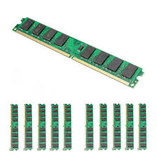
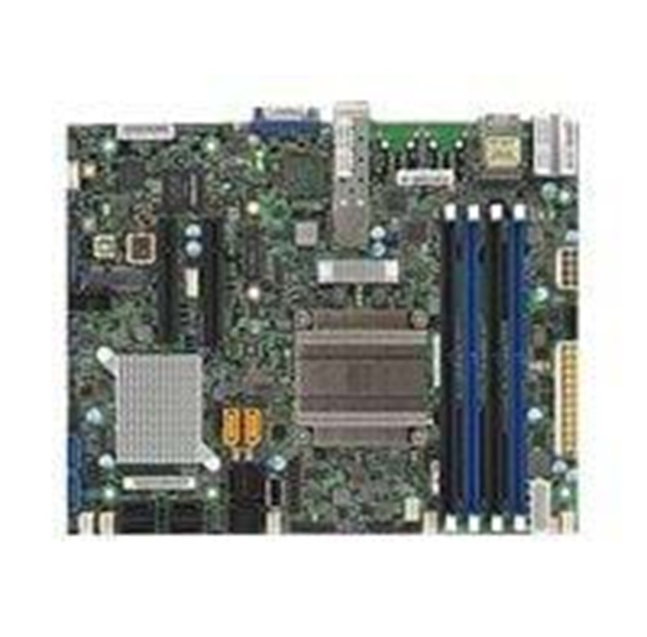

På de aller fleste maskiner er de viktigste funksjonene samlet på en kort, dette korter kalles for hovedkort.
Prosessoren er selve hjernen i en datamaskin. Den utfører styringen av alle de andre enhetene.
RAM er det som utgjør hvor raskt en maskin klarer å utføre oppgavene på. Jo større og mer RAM du har jo fortere vil maskinen arbeide


Startside